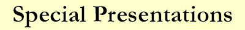
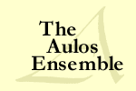
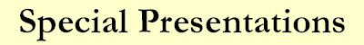
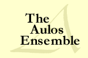
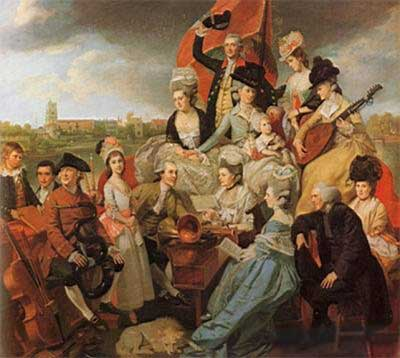

|  A Baroque Christmas | Acis and Galatea | Handel's Water Music |
 |
|  A Baroque Christmas | Acis and Galatea | Handel's Water Music |
 |
|  |
Handel's Water Music SUITE FOR A KING George I of England loved a good party, and what better entertainment than a late night excursion down the River Thames with royal friends, accompanied by a barge full of musicians! One such event took place on July 17, 1717, and the King enjoyed the music so much that he asked that it be repeated three times in succession—thus hosting a party that lasted until 3:00 in the morning. And so was born George Frideric Handel's acclaimed WATER MUSIC. These lively suites of dances caught on with the general public like wildfire and have gone on to become one of the most popular pieces in all of western music . Variety abounds in this great work from the stately majestic Overture to spirited bourrées, menuets, and gavottes, as well as virtuoso string Allegros and fanfare-like trumpet and horn calls. Aulos' performance features a group of from 17 to 23 players, hand-picked from two of America's finest original instrument orchestras—Philharmonia Baroque Orchestra and The Handel and Haydn Society—and includes as soloists two of the country's foremost practitioners of early brass playing, RJ Kelley on natural horn, and John Thiessen on natural trumpet. And it will end well before 3 AM. |
|
Email: Personal Representation: Marc Schachman Home | History | Artist Profiles | Discography | Excerpts from the Press Aulos in the 21st Century | Sound Clips | Sample Programs Special Programs: A Baroque Christmas | Acis and Galatea | Handel's Water Music |